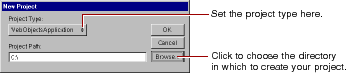
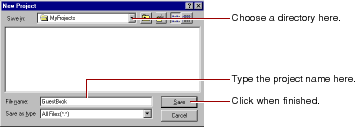
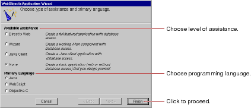

Table of Contents
Table of Contents  Previous Section
Previous Section
On Mac OS X Server, choose Project Builder from the Apple menu under Developer Applications. On Windows NT, you can launch Project Builder from the WebObjects program group in the Start menu.

The New Project panel has a Project Type pop-up list that lets you choose the type of project you want to create.
Another type of project you may want to create is WebObjectsFramework. See "Frameworks" for more information.
Type your project's location and name directly in the Project Path text field.

The New Project panel now shows the path you specified.
The WebObjects Application Wizard launches.

 Next Section
Next Section